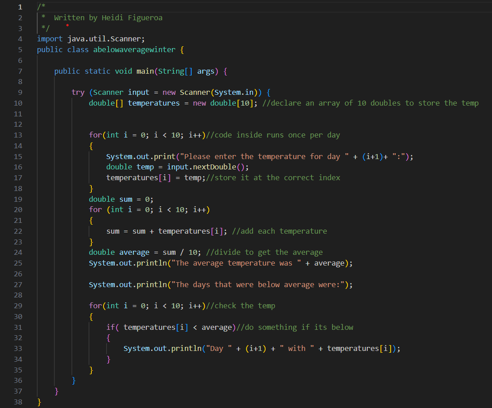
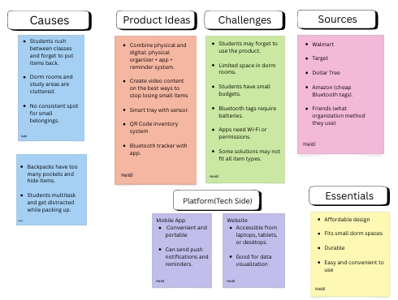
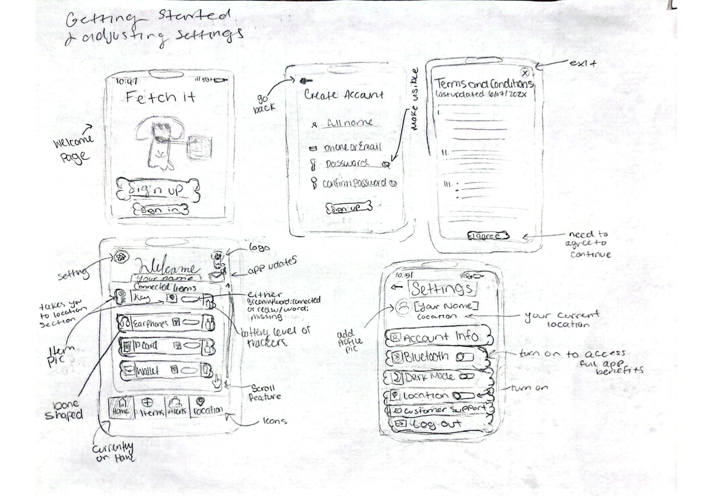

Highlighted projects
Below Average Winter – Java Temperature Analyzer
1 A Java program that takes 10 user-entered temperatures, calculates the average, and lists all temperatures that were below average. Created for an Algorithmic Design class.
Problem Statement

Students regularly misplace or lose small items
Affinity Diagram
The Affinity Diagram organizes ideas into six main topics. These are Causes, Product Ideas, Sources, Challenges, Platform, and Essentials. It highlights why students tend to lose small items and suggests possible solutions, identifies challenges that come with creating products for this demographic and brainstorms solutions for obstacles such as limited space and sources for materials. The Platform and Essentials sections list ideal features for products targeted towards students.
Sketches
3 Sketches showing the app's design and its multiple functions.